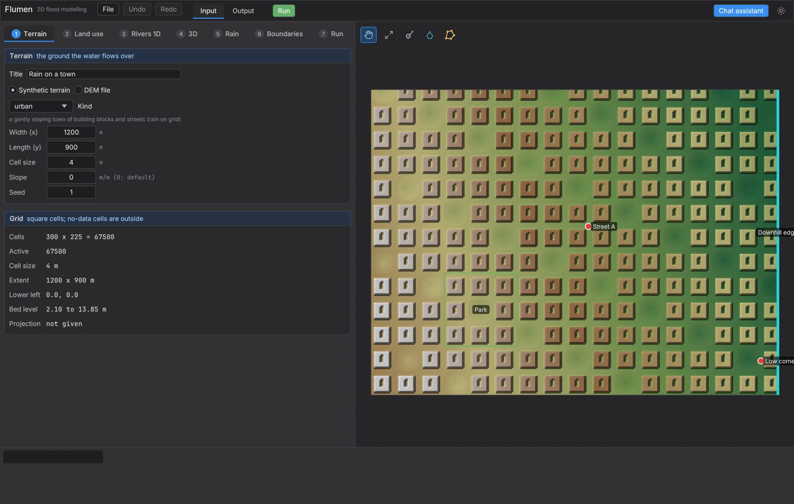
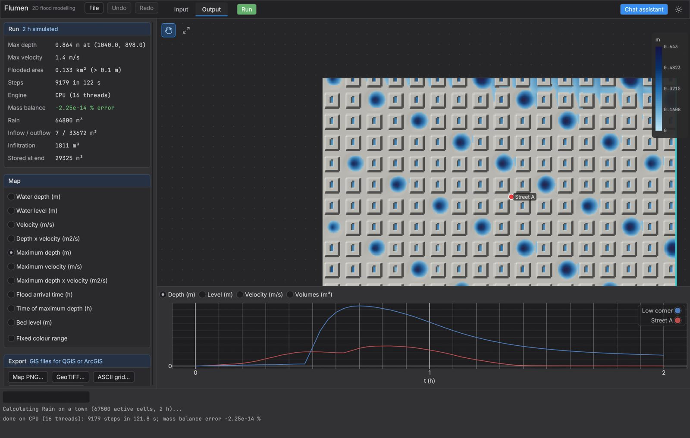
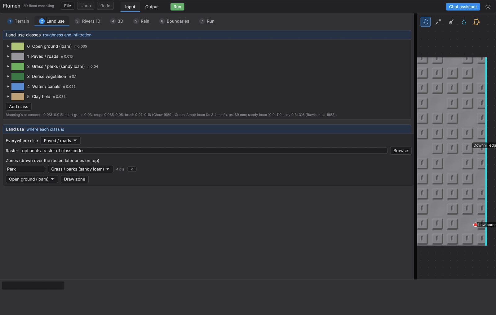
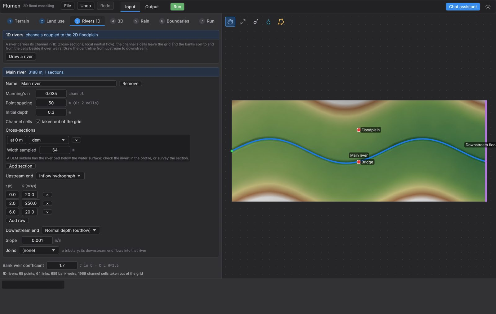
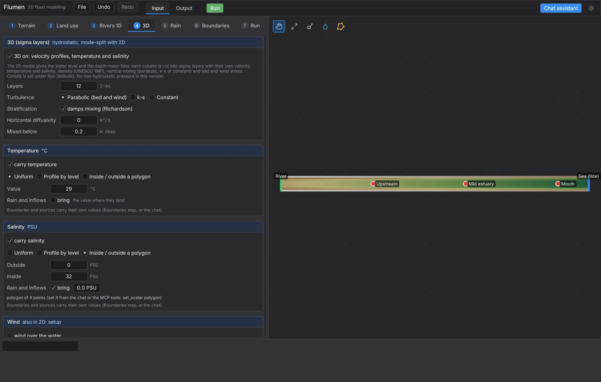
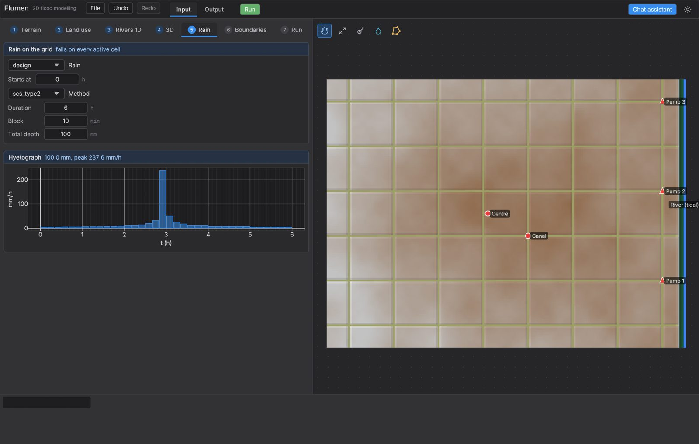
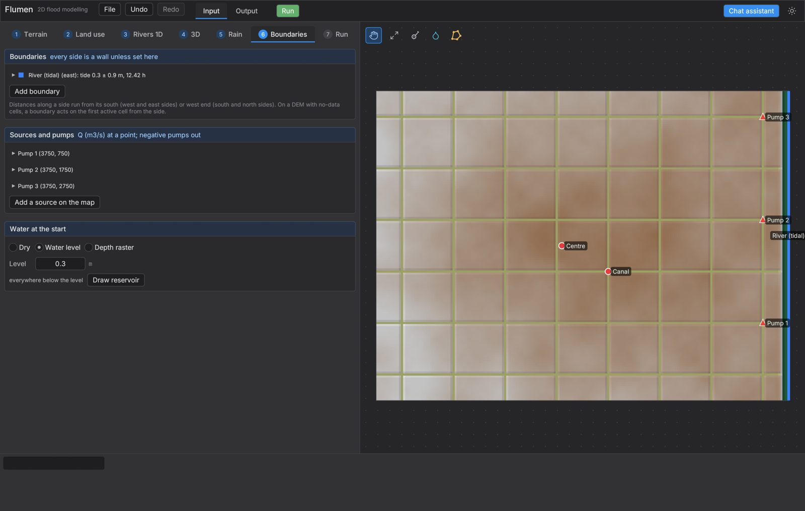
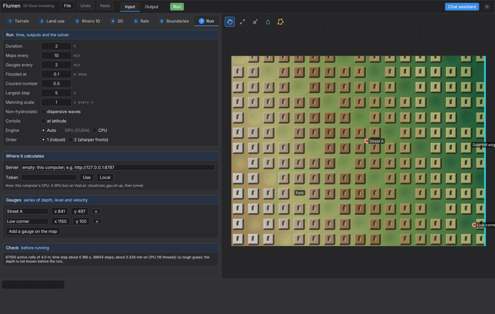
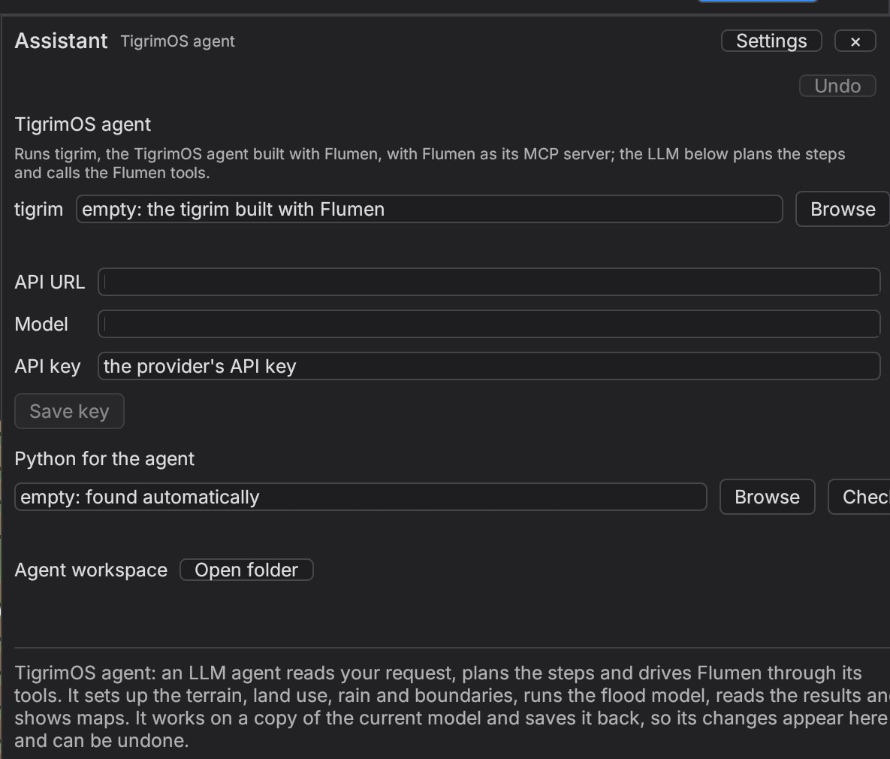

Flumen 0.1 · User manual
Using Flumen
Flumen is a flood and coastal hydrodynamics program that you can drive in three ways, all on the same project files: by hand in the desktop window, through the chat assistant built into the window, or from any AI agent that speaks the Model Context Protocol (MCP), such as Claude Code or Claude Desktop. The screenshots in this manual come from the program itself, and the numbers in the worked example are the ones it returned.
1. Start Flumen
Flumen comes as three programs that are built together. flumen is the desktop app and also the MCP server, flumen-server is the compute server that runs models on a GPU machine, and tigrim is the agent behind the chat assistant. Desktop builds are not on this site yet, so write to the AI Research Group to get a copy.
flumen # open the app with the default model (Rain on a town)
flumen flood.flumen # open a saved model
flumen --mcp # no window: an MCP server on stdin/stdout for an agentThe app keeps its settings in one folder, which is ~/Library/Application Support/Flumen on macOS, %APPDATA%\Flumen on Windows and ~/.config/flumen on Linux. That folder holds the compute server choice (compute.json), the chat settings and API key, and the agent's workspace, so deleting it resets Flumen without touching your models.
2. The window

The top bar runs from left to right through the File menu (New model, Open model, Save model, Save model as and Import DEM), Undo and Redo, the Input and Output tabs and the green Run button, with the theme switch and the Chat assistant button on the right. The name of the open file appears beside them with a star when there are unsaved changes, and undo keeps the last 200 edits of the whole model.
| ⌘Z / Ctrl+Z | Undo |
|---|---|
| ⌘⇧Z or ⌘Y | Redo |
| ⌘S / Ctrl+S | Save model |
| Scroll wheel | Zoom at the pointer |
| Drag | Pan (left button in Pan mode, middle or right button in any mode) |
| Double-click or Enter | Finish a zone, reservoir or river line; Esc cancels it |
The tool strip above the map holds Pan, Fit and, in Input, the gauge, source and zone tools. A gauge or source is placed with one click, whereas a zone takes one click per corner and is finished with a double-click. Rivers and reservoirs are drawn the same way but start from the Draw a river and Draw reservoir buttons in the side panel. The strip along the bottom shows the pointer position and the bed level under it, and the log below records every run, note and error, with errors in red and notes in amber.
3. A first flood model
The quickest way to learn Flumen is to run the template it opens with, which drops a 60 mm, one-hour storm on 1.2 by 0.9 km of streets and building blocks that drain downhill to a free outflow on the east side.
- Choose File → New model → Rain on a town, or simply start the app, which opens this model.
- Click through the step tabs from Terrain to Run to see how the model is built. The Check card at the bottom of the Run step estimates the cells, the time step and the run time before you start.
- Press the green Run button. A Calculation window shows the progress and has a Stop button that keeps the maps computed so far.
- When the run ends the app switches to Output, which shows the maximum depth map, the run summary and the gauge records.

The mass balance line is the first thing to read after any run, because it compares the water that entered and left with the water stored at the end. An error near round-off, as here, means the bookkeeping is sound, whereas a large error points to a setup problem that should be fixed before the maps are used.
4. Terrain
The Terrain step sets the ground the water flows over, either as a Synthetic terrain for tests and teaching or as a DEM file for real sites. A synthetic terrain has a Kind (valley, urban, lowland, estuary, bar_flume, plane or bowl), a width, a length, a cell size, a slope and a seed for its roughness, so the same seed always gives the same ground.
A DEM can be a GeoTIFF or an ESRI ASCII grid, and it must be projected in metres (UTM or a national grid) with square cells and a single band, because a longitude–latitude raster is refused with a request to reproject it. Model cell size resamples the DEM to a coarser grid when it is set, and a value of 0 keeps the DEM's own cells. Set the EPSG code when the file does not carry one, so that exported maps open in the right place in QGIS or ArcGIS. The read-only Grid card then reports the cell count, the active cells, the extent and the range of bed levels.
5. Land use

Each land-use class has a Manning's n and an infiltration model, which is no infiltration, a constant rate, Green–Ampt (saturated conductivity, wetting-front suction and moisture deficit) or an SCS curve number with its initial abstraction ratio. Typical values from Chow (1959) and Rawls et al. (1983) are listed under the classes as a starting point, although they should be checked against local data.
The second card says where each class lies. Everywhere else sets the default class, a Raster of class codes can be mapped to classes through a code table, and Zones are polygons drawn on the map with Draw zone, with later zones lying on top of earlier ones. The map switches to land-use colours on this step, so you can see the result as you edit.
6. Rivers 1D

A river carries its channel in 1D while the floodplain stays on the 2D grid, which keeps a narrow channel accurate without very small cells. Press Draw a river and click its centreline from upstream to downstream, then give it a Manning's n, a point spacing and cross-sections. A section can be a Trapezoid, a section sampled From the DEM or a table of Surveyed points, and between sections the river is interpolated.
Each end takes an inflow hydrograph, a water level, a tide, normal depth, a run-out onto the grid or a closed end, and Joins makes a tributary flow into another river. When Channel cells is ticked the cells under the channel leave the 2D grid, and the river then swaps water with the cells beside it over bank weirs whose coefficient C is set at the bottom of the step.
7. 3D

The 3D option splits each column into sigma layers that follow the bed and the surface, so the model gives velocity profiles and carries temperature and salinity, which matters for estuaries, salt intrusion and outfalls. Set the number of Layers (2 to 64), the Turbulence closure (parabolic, k–ε or a constant viscosity), whether stable stratification damps mixing, and the depth below which columns are treated as fully mixed.
The Temperature and Salinity cards turn each quantity on and set its starting field as a uniform value, a profile against level, or one value inside a polygon and another outside it. Wind and surface heat exchange are set on the same step, and wind also drives setup in 2D runs. The polygon itself is set from the chat or with the MCP tool set_scalar, and the temperature and salinity of boundary and source water are also set only through the chat or MCP at present.
8. Rain

Rain falls on every active cell. It can be a constant rate, a hyetograph table, radar or interpolated rain grids, or a Design storm, which is triangular, SCS type II, uniform, or an alternating-block storm built from an IDF curve i = a/(t + b)c. The IDF constants a, b and c belong to the site and the return period, so take them from the local design manual rather than from an example.
The hyetograph under the settings shows the total depth and the peak intensity, which is a quick check that the storm is the one you meant. Rain grids are added with Add rain grids..., each new file starting 0.25 h after the one before, and Last grid ends closes the final interval.
9. Boundaries

Every side of the model is a wall unless a boundary is set on it, and a boundary covers the whole side or a stretch from From to To metres along it. The kinds are free outflow, water level, tide, inflow hydrograph, rating curve, normal depth and wall, and each kind shows only the fields it needs.
Sources and pumps add or remove water at a point through a table of discharge against time, with negative values pumping out, and Add a source on the map places one with a click. Water at the start is dry, a level that fills every cell below it (inside a reservoir polygon if one is drawn), or a depth raster.
10. Run and the GPU

The Run step sets the simulated Duration, how often maps and gauge values are kept, the depth that counts as flooded, the Courant number and the largest time step. Manning scale multiplies every n for calibration, Order chooses first order (robust) or second order (sharper fronts), and Non-hydrostatic adds dispersive short waves with a breaking switch, which is needed for wave flumes and tsunami runup but not for floods. Coriolis applies at a given latitude, and Engine selects Auto, GPU (CUDA) or CPU, with GPU disabled on a machine without an NVIDIA card.
Gauges record depth, level and velocity at points and can be added on the map. The Check card validates the model and estimates the run time, so read it before a long run, together with any notes it lists.
Running on a rented GPU
A laptop without an NVIDIA card can send runs to flumen-server on a GPU machine. Under Where it calculates, enter the server address and token and press Use, which checks the server and saves the choice, or press Local to calculate on this computer again. The project and its rasters go to the server, and compact result frames come back.
cloud/vast_gpu.sh up # rent an RTX 4090/5090 box on Vast.ai, build and start flumen-server
cloud/vast_gpu.sh tunnel # SSH tunnel to 127.0.0.1:8787 and save compute.json
cloud/vast_gpu.sh status # the box and the server
cloud/vast_gpu.sh down # close the tunnel, forget the server and destroy the boxThe script needs the vastai command-line tool, ssh and Python 3, and the server speaks plain HTTP with a token, so always reach it through the SSH tunnel rather than over the open internet. Destroy the box with down when you finish, because a rented GPU is billed by the hour whether or not it is running a model. On your own GPU machine, start the server with flumen-server --http 127.0.0.1:8787 --token YOUR_TOKEN.
11. Output and export
The Run card on the Output tab summarises the run, with the maximum depth and velocity and where they occur, the flooded area, the number of steps, the engine, the mass balance, and the volumes of rain, inflow, outflow, infiltration and storage at the end. A warning appears above it if the model has been edited since the run, because the maps then belong to the earlier model.
The Map card chooses what is drawn: water depth, level, velocity and depth × velocity at each saved time, their maxima over the run, the flood arrival time, the time of maximum depth and the bed level. 3D runs add surface and bottom salinity, temperature and velocity and the bottom-to-surface density difference. Quantities that change with time have Play and a frame slider, and Fixed colour range holds the legend steady for comparisons.
The chart under the map plots depth, level or velocity at the gauges, or the volumes against time. 3D runs add a vertical profile at each gauge, and models with rivers add a long profile of each reach with its invert, lower bank, maximum level and level at the chosen time.
| Map PNG... | A 1200 px picture with legend, gauges and title |
|---|---|
| GeoTIFF... / ASCII grid... | The quantity on screen at the current frame, as a raster |
| Flood extent GeoJSON... / shapefile... | Polygons of maximum depth above the Flooded at depth |
Exports carry the projection only when an EPSG code is known, which is why setting it on the Terrain step matters. Gauge series are not exported as CSV from the window, but an agent can read them with get_timeseries_at_point.
12. The chat assistant

Chat assistant opens a panel where you describe the study in plain words, for example "Rain of 80 mm in 2 hours on this town: where is the water deeper than 30 cm, and how fast does it come?". The agent behind it is tigrim, which uses Flumen as its only MCP server and an LLM of your choice to plan the steps, so it can set up the terrain, land use, rain and boundaries, run the model, read the results and show up to four maps under its reply.
Open Settings in the panel and enter the provider's API URL (for example https://openrouter.ai/api/v1), the Model and the API key, then press Save key. The key is stored in the settings folder, readable only by your user on macOS and Linux. The agent works on a copy of the current model and hands its changes back as one edit that Undo removes, and its results appear in Output without a second run.
The agent is told to use only the Flumen tools, to keep models to about 200,000 cells, to leave the inputs you gave unchanged unless you ask, and to report only numbers that the tools returned. Images can be attached only when the provider is OpenRouter and the model accepts images. If the panel reports that there is no LLM key, add the key under Settings.
13. Connect an AI agent (MCP)
The MCP server is part of the flumen program, so no adaptor is needed. It talks JSON-RPC over stdin and stdout, and it exposes 43 tools that cover every step in the window and a few that the window does not have.
Claude Code
claude mcp add flumen -- /path/to/flumen --mcpClaude Desktop, Cursor and other clients (JSON config)
{
"mcpServers": {
"flumen": {
"command": "/path/to/flumen",
"args": ["--mcp", "--open", "/path/to/flood.flumen", "--autosave", "/path/to/flood.flumen"]
}
}
}--open starts the server with a model loaded, and --autosave writes the model back after every tool that changes it, so you can open the same file in the window and see what the agent built. Both are optional.
Model
list_templates, create_model, get_model, validate
Terrain and land
import_dem, set_terrain, generate_mesh, set_roughness, add_land_use_class, set_land_use, set_infiltration
Water in and out
set_rainfall, apply_design_storm, set_initial_water, set_boundary_condition, add_source, add_gauge
Rivers
add_river, set_river_section, get_river_profile
3D
set_3d, set_scalar, set_wind, set_heat_exchange, get_vertical_profile, get_stratification, get_cross_section
Run
set_run, set_compute, run_simulation, get_run_status, cancel_run, list_scenarios
Results
get_max_depth, get_flood_extent, get_timeseries_at_point, get_runoff_summary, check_mass_balance, compare_scenarios, show_picture, export_map
Calibration and screening
calibrate_against_observations, predict_flood_fast
Some features exist only through MCP or the chat at present. Named scenarios and their comparison (compare_scenarios), background runs, calibration against an observed series (calibrate_against_observations, which needs a GPU server), quick screening on a coarser grid (predict_flood_fast), vertical sections of 3D runs, runoff coefficients and series at any point are not in the window, which keeps one set of results at a time.
A good first prompt
Open flood.flumen, check it with validate, run it, then check the mass balance
before you report anything. Give me the flooded area deeper than 0.1 m and write
the extent to extent.geojson.14. Files and templates
A model is saved as a .flumen file, which is readable JSON with the title, terrain, land-use classes and zones, rain, initial water, boundaries, sources, gauges, rivers, 3D settings, wind and run settings. When the results in memory belong to the saved model they are written beside it as name.results.bin and loaded back on Open, so a finished run does not have to be repeated. Rasters are referenced by path rather than copied, so keep them next to the model when you move it.
| Rain on a town | 60 mm in 1 h on 1.2 × 0.9 km of streets and blocks, free outflow downhill |
|---|---|
| River flood | An inflow hydrograph peaking at 250 m³/s down a 3 km valley onto its floodplain |
| Coastal lowland | 100 mm SCS type II rain in 6 h on a canal grid behind a floodwall on a tidal river, with pumps |
| River flood, 1D-2D | The same valley with its channel as a 1D river spilling onto the 2D floodplain |
| Estuary, 3D | Salt intrusion from a 32 PSU tidal sea into a 20 km estuary against a 300 m³/s river, 12 layers |
| Wave flume | Non-hydrostatic 2.02 s waves over the submerged bar of Beji and Battjes (1993) |
| Dam break | A 4 m reservoir released down a dry valley |
| Blank | A flat 500 m square, no rain, walls all round |
15. Limits and troubleshooting
- The DEM is refused.
- Flumen needs a single-band raster in metres with square cells, so reproject a longitude–latitude DEM to UTM or a national grid first, for example with
gdalwarp -t_srs EPSG:32647for Bangkok. - Stop does nothing on a remote run.
- Stop works on runs on this computer only, and a run on a compute server also shows no progress until it ends. Keep remote runs short while you test, and check the Check card's estimate before a long one.
- The GPU option is greyed out.
- The CUDA engine needs an NVIDIA GPU with its driver, and on other machines Flumen calculates on the CPU or on a compute server set under Run.
- The mass balance error is large.
- Do not use the maps. Check the boundaries, sources and the Largest step setting against the notes in the log, then run again.
- The exported map opens in the wrong place.
- Set the EPSG code on the Terrain step, because the export carries no projection otherwise and the log says so.
- The chat says there is no LLM key.
- Open Settings in the chat panel, enter the provider's URL, model and key, and press Save key.
The depth-integrated equations cannot represent splash, overturning waves or flow that is strongly three-dimensional at a structure, and the paper reports where this limits the results, for example a wall splash that stays 60–67 % low. Read the paper for the verification and benchmark results before using Flumen on a design.